알아 두세요 사용자 권한(최고 관리자, 각 부서 팀장 등)에 따라 보이는 버튼과 사용할 수 있는 기능이 다를 수 있습니다. 이 매뉴얼의 화면은 최고 관리자 계정 기준이며, 출장자 관리 화면은 가상의 시험 데이터로 만들었습니다.
CHAPTER 1
시작하기
(주)TW 스마트 프로젝트 관리 시스템은 프로젝트 일정, 공수, 출장자 배정, 이슈, 공사일보, 견적, Vision SPC 분석을 한 곳에서 관리하는 웹 애플리케이션입니다. 이 매뉴얼은 처음 쓰는 사람도 화면을 보며 따라 할 수 있도록 기능별 사용 순서와 주의할 점을 함께 적었습니다.
1. 시작하기
1-1. 로그인
회사 이메일 계정(@twgroup.co.kr)으로 로그인합니다.
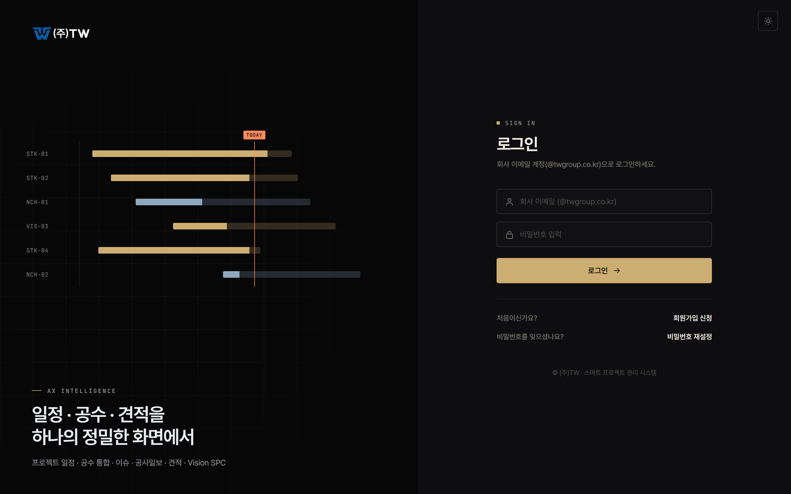
이메일과 비밀번호를 입력하고 [로그인]을 누릅니다.
처음 사용하는 경우 [회원가입 신청]에서 이름과 소속팀을 포함해 신청합니다. 이름과 소속팀은 필수 항목입니다.
비밀번호를 잊은 경우 [비밀번호 재설정]을 누릅니다.
오른쪽 위의 해/달 모양 버튼으로 라이트/다크 화면을 바꿀 수 있습니다.
1. 시작하기
1-2. 회원가입 신청
처음 사용하는 경우 로그인 화면의 [회원가입 신청]으로 계정을 신청합니다.
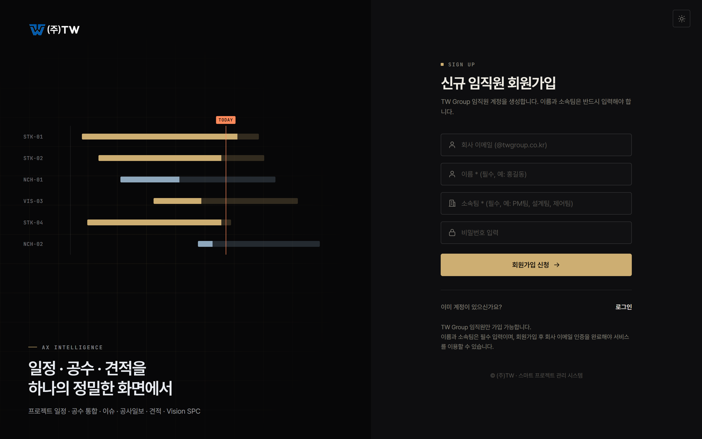
회사 이메일, 이름, 소속팀, 비밀번호를 입력하고 [회원가입 신청]을 누릅니다. 이름과 소속팀은 필수입니다.
가입 직후에는 조회 위주의 기본 권한이 부여됩니다. 더 많은 기능이 필요하면 시스템 관리자에게 권한 변경을 요청하세요.
이미 계정이 있으면 [로그인]을 눌러 로그인 화면으로 돌아갑니다.
1. 시작하기
1-3. 비밀번호 찾기/재설정
비밀번호를 잊었을 때 로그인 화면의 [비밀번호 재설정]을 누릅니다.
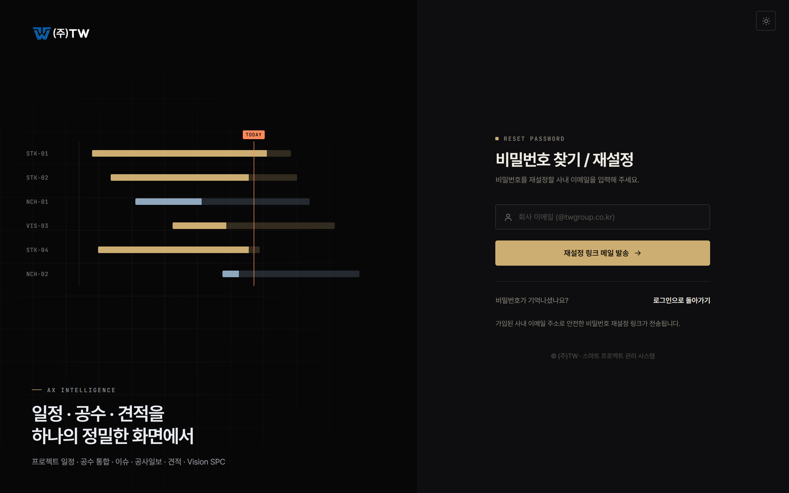
가입한 회사 이메일을 입력하고 [재설정 링크 메일 발송]을 누르면 메일로 재설정 링크가 전송됩니다.
메일의 링크에서 새 비밀번호를 설정한 뒤 다시 로그인합니다.
1. 시작하기
1-4. 화면 구성
로그인하면 프로젝트 일정 화면이 열립니다. 모든 화면의 위쪽 구성은 같습니다.
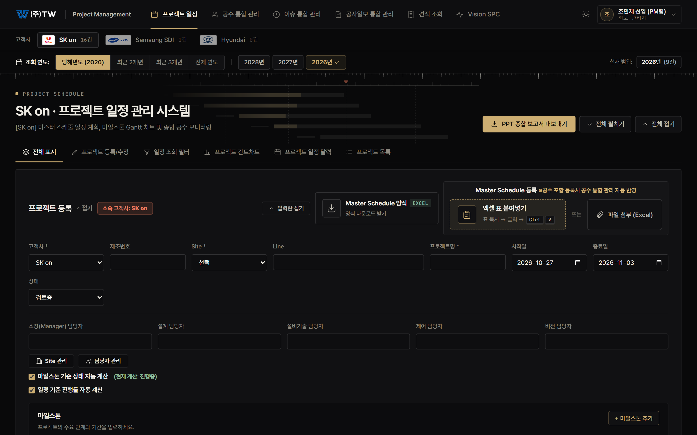
상단 메뉴: 프로젝트 일정 / 공수 통합 관리 / 출장자 관리 / 이슈 통합 관리 / 공사일보 통합 관리 / 견적 조회 / Vision SPC를 전환합니다. 권한이 없는 메뉴는 누르면 안내 창이 나옵니다.
고객사 줄: SK on, Samsung SDI, Hyundai 중 볼 고객사를 고릅니다. 이름 옆 숫자는 등록된 프로젝트 수입니다.
조회 연도 줄: 당해년도, 최근 2개년, 최근 3개년, 전체 연도 또는 연도별 버튼으로 조회 범위를 정합니다. 오른쪽에 현재 범위와 프로젝트 건수가 표시됩니다.
예외: 출장자 관리 화면은 모든 고객사의 프로젝트를 한꺼번에 다루므로 고객사 줄과 조회 연도 줄이 숨겨집니다.
화면 머리말과 하위 메뉴: 화면 제목 아래의 밑줄 탭으로 세부 기능을 바꿉니다.
오른쪽 위 사용자 메뉴: 이름과 권한이 표시되며, 누르면 아래 메뉴가 열립니다.
1. 시작하기
1-5. 사용자 메뉴
오른쪽 위 이름 영역을 누르면 계정 관련 메뉴가 열립니다.
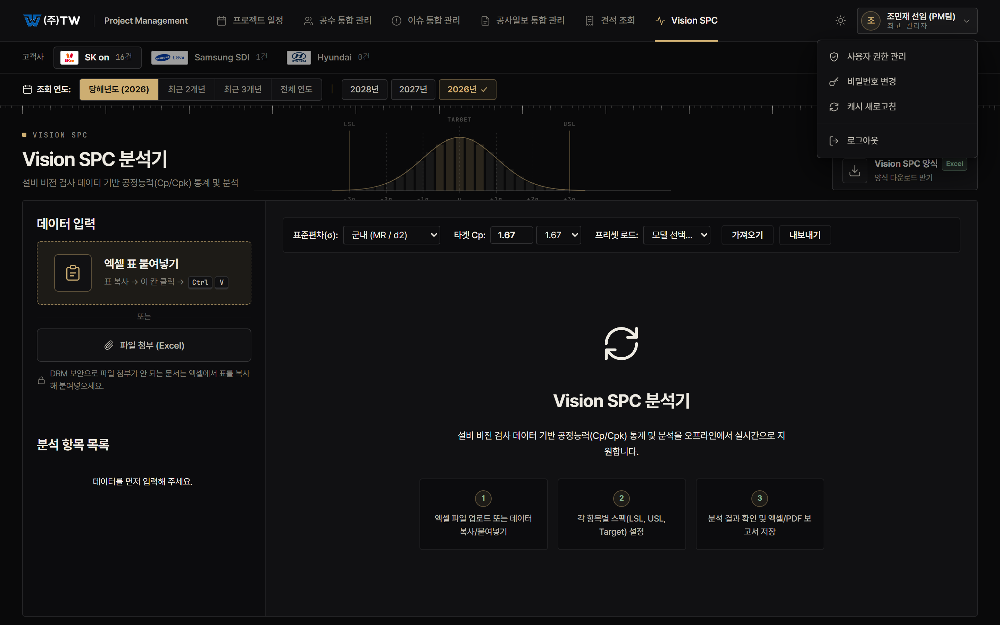
비밀번호 변경: 내 비밀번호를 바꿉니다.
캐시 새로고침: 화면이 최신 내용으로 바뀌지 않을 때 누릅니다.
로그아웃: 시스템에서 나갑니다.
1. 시작하기
1-6. 비밀번호 변경
사용자 메뉴의 [비밀번호 변경]을 누르면 변경 창이 열립니다.
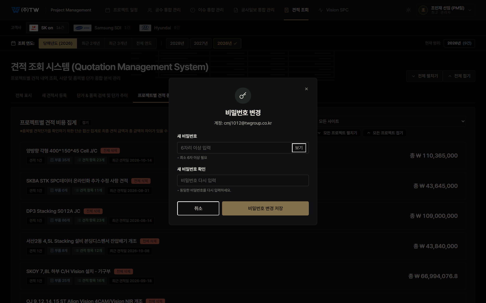
새 비밀번호와 새 비밀번호 확인을 같게 입력하고 [비밀번호 변경 저장]을 누릅니다. 입력칸 옆 [보기]로 입력 내용을 확인할 수 있습니다.
[취소]를 누르면 변경하지 않고 닫습니다.
1. 시작하기
1-7. 라이트/다크 화면 전환
오른쪽 위 해/달 모양 버튼으로 화면 색상을 바꿉니다.
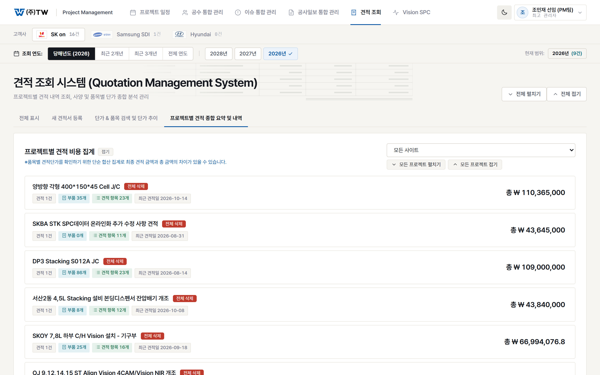
기본은 어두운 화면(다크)이고, 버튼을 누르면 밝은 화면(라이트)으로 바뀝니다. 다시 누르면 돌아옵니다.
이 매뉴얼의 대부분 화면은 다크 모드 기준입니다.
1. 시작하기
1-8. 표 붙여넣기와 파일 첨부
엑셀 데이터를 시스템에 넣는 방법은 어느 화면이든 같습니다. 회사 보안(DRM) 때문에 파일 첨부가 안 되는 문서가 많아서 표 붙여넣기가 기본 방법이고, 파일 첨부는 옆의 보조 버튼입니다.
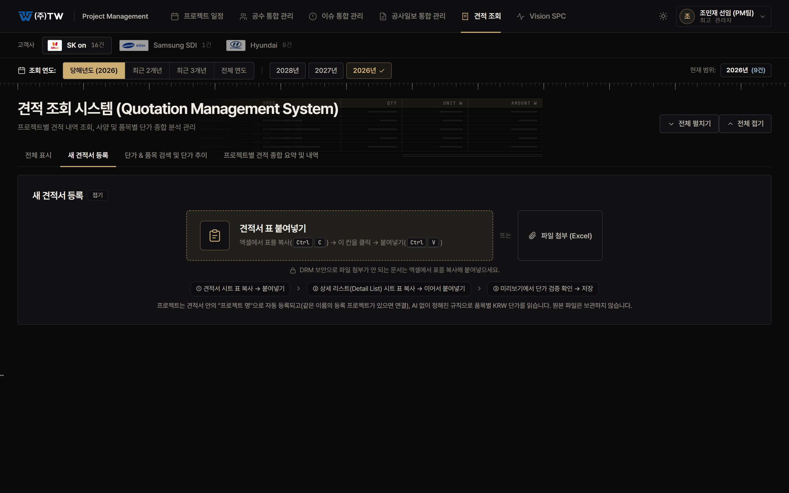
엑셀에서 필요한 표(머리글 포함)를 드래그해 복사합니다.
화면의 색이 있는 큰 점선 칸(Ctrl V 키 그림이 보이는 칸)을 마우스로 한 번 누르고 Ctrl+V를 누릅니다. 마우스 오른쪽 버튼을 눌러 [붙여넣기]를 골라도 됩니다.
붙여넣은 내용은 바로 저장되지 않고 미리보기로 먼저 나옵니다. 내용과 검증 결과를 확인한 뒤 저장 버튼을 누릅니다.
파일 첨부가 되는 문서라면 점선 칸 옆의 [파일 첨부 (Excel)]를 눌러 엑셀 파일을 올려도 결과는 같습니다. 파일은 내 브라우저에서만 읽고 서버에 올리지 않습니다.
프로젝트 미선택이나 권한 부족으로 칸이 비활성이면 칸 안에 이유가 적혀 있습니다. 그 안내대로 먼저 프로젝트를 고르거나 권한을 확인하세요.
사용하는 화면: 프로젝트 일정(Master Schedule), 공사일보(작업표·공수표), 견적 조회(견적서·상세 리스트), Vision SPC(검사 데이터), 출장자 관리(팀원 명단).
붙여넣기가 안 될 때 ① 점선 칸을 먼저 한 번 눌러 커서가 들어갔는지 확인하세요. ② 표가 아니라 그림으로 복사되었다면 엑셀 셀을 다시 드래그해 복사하세요. ③ 그래도 안 되면 파일 첨부를 쓰거나 9장의 해결 방법을 확인하세요.
CHAPTER 2
프로젝트 일정
선택한 고객사의 마스터 스케줄, 마일스톤 간트 차트, 공수 현황을 관리합니다. 위쪽 [PPT 종합 보고서 내보내기]로 보고서를 만들 수 있고, [전체 펼치기]/[전체 접기]로 모든 구역을 한 번에 열고 닫을 수 있습니다.
2. 프로젝트 일정
2-1. 전체 표시
프로젝트 등록부터 목록까지 모든 구역을 한 화면에 이어서 보여 줍니다.
아래로 내려가며 등록 → 필터 → 간트차트 → 달력 → 목록을 차례로 확인합니다.
각 구역 제목 옆의 [접기]로 필요 없는 구역을 접을 수 있습니다.
2. 프로젝트 일정
2-2. 프로젝트 등록/수정
새 프로젝트를 직접 입력하거나 Master Schedule 엑셀로 한 번에 등록합니다.
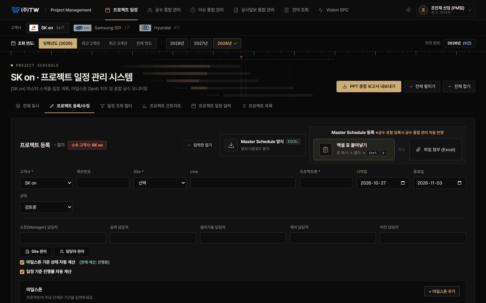
엑셀로 등록: [양식 다운로드 받기]로 양식을 받아 작성한 뒤, 표를 복사하고 점선 칸을 클릭해 Ctrl+V 하거나 [파일 첨부 (Excel)]로 올립니다. 공수가 포함되면 공수 통합 관리에 자동 반영됩니다.
선택한 월의 총 공수, 투입 프로젝트 수, 최대 투입 인원과 부서별 편성 현황을 보여 줍니다.
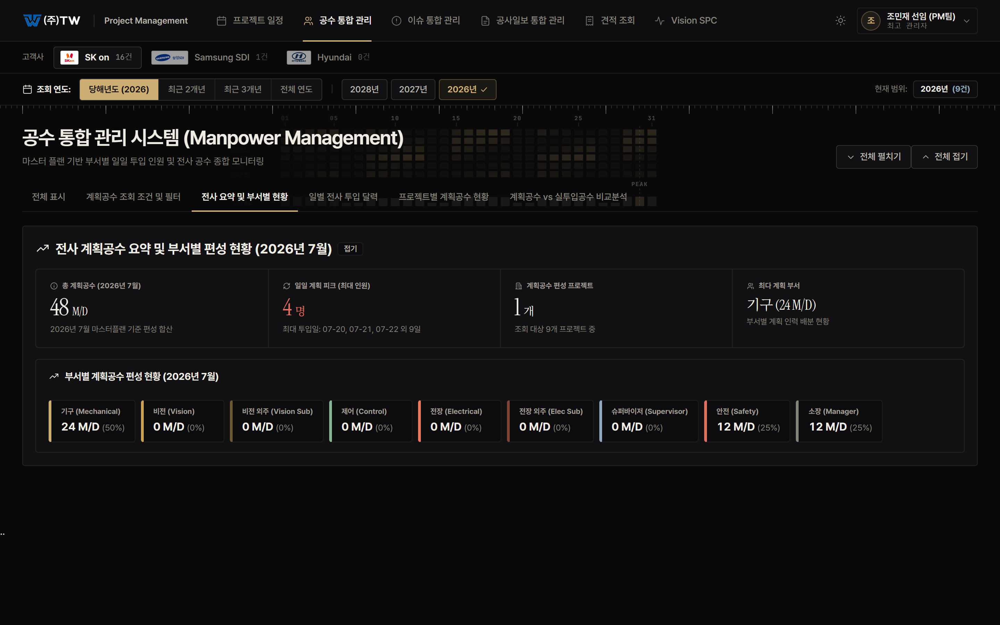
부서별 카드(기구, 비전, 제어, 전장, 안전, 소장 등)에서 부서별 M/D와 비중을 확인합니다.
3. 공수 통합 관리
3-4. 일별 전사 투입 달력
날짜별 투입 인원을 달력으로 확인합니다.
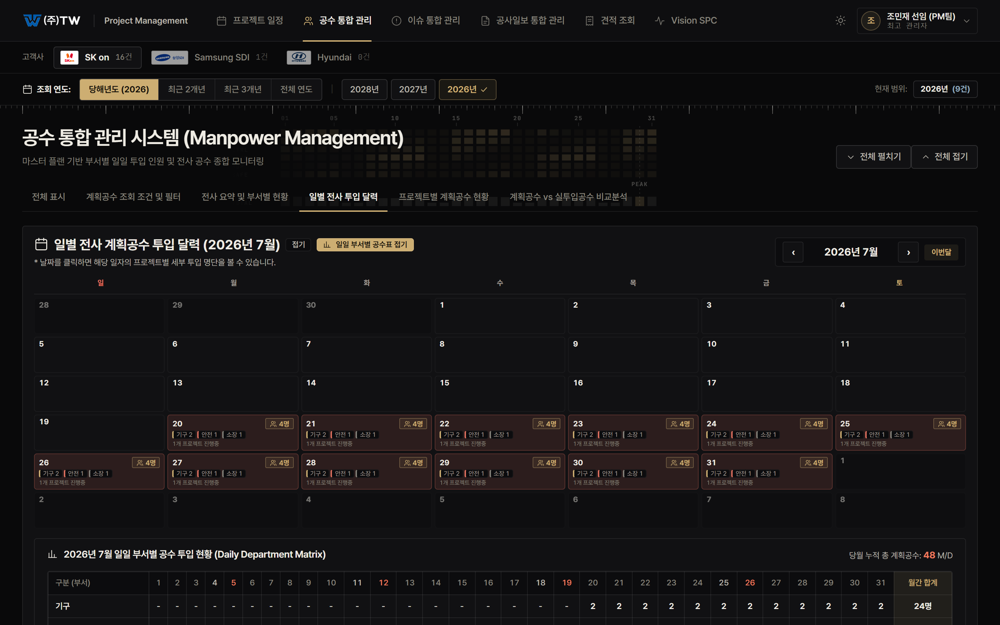
달력의 각 날짜에서 그날 투입되는 인원을 확인합니다.
아래 일별 부서 공수 매트릭스에서 부서별 일별 인원과 월간 합계를 확인합니다.
3. 공수 통합 관리
3-5. 프로젝트별 계획공수 현황
프로젝트별로 월별·부서별 계획 공수를 표로 확인합니다.
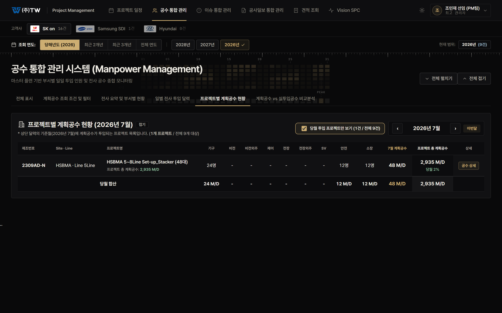
프로젝트 행별로 부서별 M/D와 총 공수를 볼 수 있습니다.
[일일 투입 프로젝트 보기] 체크 옵션으로 해당 기간에 투입이 있는 프로젝트만 표시합니다.
표 오른쪽 [공수 상세] 버튼으로 해당 프로젝트의 상세 창을 엽니다.
3. 공수 통합 관리
3-6. 프로젝트 공수 상세
[공수 상세]를 누르면 프로젝트의 공수 투입 현황 창이 열립니다.
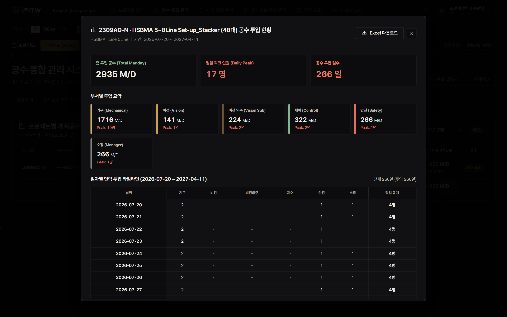
총 공수, 일일 최대 투입 인원, 투입 일수와 부서별 M/D, 일자별 인력 투입표가 나옵니다.
[Excel 다운로드]로 내려받습니다.
3. 공수 통합 관리
3-7. 계획공수 vs 실투입공수 비교분석
계획한 공수와 공사일보에 기록된 실제 투입 공수를 비교합니다.
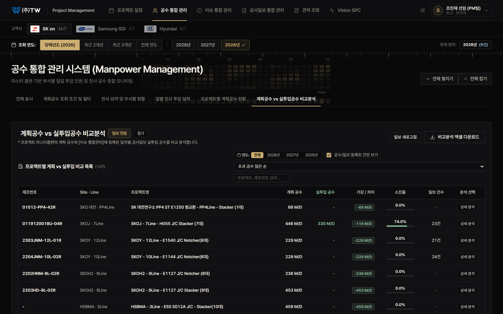
프로젝트별 계획 공수, 실투입 공수, 차이, 소진율을 확인합니다. 부족/초과 여부가 색으로 구분됩니다.
[공수/일보 등록된 건만 보기]를 체크하면 공수나 일보가 있는 프로젝트만 나옵니다. 검색칸에서 프로젝트를 찾습니다.
[일보 새로고침]으로 최신 일보 데이터를 다시 불러오고, [비교분석 엑셀 다운로드]로 내려받습니다.
행의 [상세 분석]을 누르면 선택한 프로젝트의 부서별 계획 대비 실투입 비교가 나타나고, [선택 해제]로 선택을 풉니다.
실투입 공수는 공사일보를 등록해야 반영됩니다.
CHAPTER 4
출장자 관리
프로젝트별로 필요한 부서 인원(계획 공수)에 맞춰 출장자를 배정하고, 부서별 인원이 언제 어디에 있는지 한눈에 봅니다. 프로젝트 일정에 등록된 프로젝트와 계획 공수를 그대로 가져와 쓰므로 프로젝트를 따로 등록하지 않습니다. 이 장의 화면은 가상의 시험 데이터(이름·프로젝트)로 만들었습니다.
4. 출장자 관리
4-1. 화면 구성과 사용 권한
상단 메뉴의 [출장자 관리]를 누르면 열립니다. 네 개의 탭과 오른쪽 위 공통 버튼으로 구성됩니다.
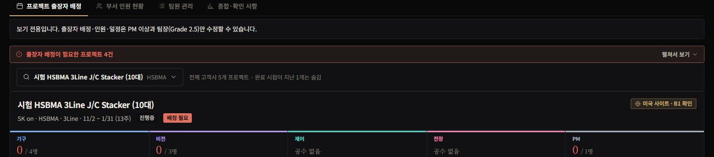
프로젝트 출장자 배정: 프로젝트를 고르고 부서별 칸에 출장자를 넣습니다(4-2~4-8).
부서 인원 현황: 오늘(또는 고른 날) 부서 인원이 본사·출장·외부·부재 중 어디에 있는지 봅니다(4-9~4-11).
팀원 관리: 출장자로 배정할 인원 명단을 등록·수정합니다(4-13~4-14).
종합·확인 사항: 부족·경고와 부서별 주차 종합표를 봅니다(4-15).
오른쪽 위 [일 단위]/[주 단위]는 모든 탭의 시간 칸을 하루 또는 한 주로 바꿉니다. 고른 값은 이 브라우저에 기억됩니다. [새로고침]은 최신 데이터를 다시 불러오고, [종합 엑셀]은 4-17, 그 아래의 작업 기록 카드는 4-19를 참고하세요.
다른 사람이 고친 내용은 창으로 돌아올 때(1분 이상 지났으면) 자동으로 다시 읽어 오지만, 바로 확인하려면 [새로고침]을 누릅니다.
권한: 조회는 관리자·Grade3·Grade2.5·Grade2, 배정·인원·일정 수정은 관리자·Grade3·Grade2.5입니다. Grade2는 위 그림처럼 보기 전용 안내 띠가 나오고 수정 창이 열리지 않습니다. Grade1은 출장자 관리를 쓸 수 없습니다. [종합 엑셀] 내려받기는 관리자·Grade3·Grade2.5만 쓸 수 있습니다.
출장자 관리는 고객사와 연도에 상관없이 전체 프로젝트를 보여 줍니다. 고객사를 통합해 인원을 운영하기 때문입니다.
4. 출장자 관리
4-2. 배정이 필요한 프로젝트 찾기
화면 맨 위의 붉은 띠가 아직 출장자가 배정되지 않았거나 인원이 부족한 프로젝트를 알려 줍니다.
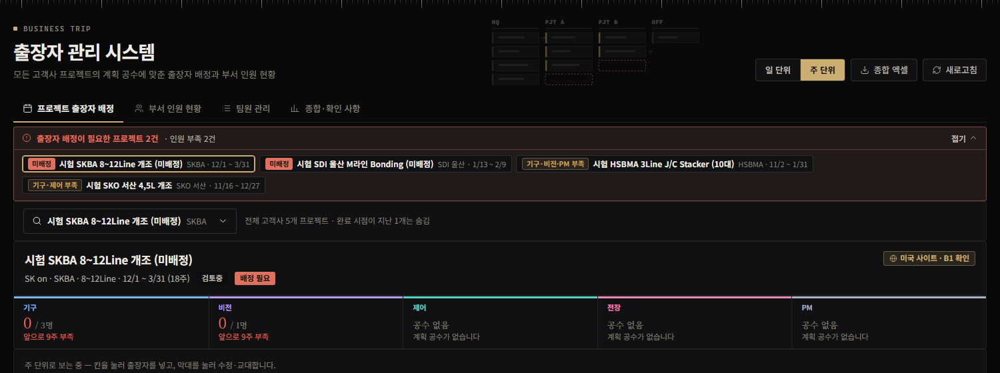
붉은 띠는 평소 한 줄로 접혀 있고 "출장자 배정이 필요한 프로젝트 N건 · 인원 부족 M건"만 보입니다. [펼쳐서 보기]를 누르면 프로젝트가 작은 칩으로 나열됩니다. 칩을 누르면 그 프로젝트가 열립니다.
칩의 상태: 미배정(아무도 배정되지 않음)이 먼저, 부족(일부 부서 인원 부족)이 뒤에 나옵니다. 부서 이름이 함께 표시됩니다.
계획 공수가 아직 등록되지 않은 프로젝트는 필요한 인원을 알 수 없으므로 이 띠에 올라오지 않습니다.
완료 시점(종료일)이 오늘보다 앞선 프로젝트는 기본으로 숨겨집니다(4-3 참고).
4. 출장자 관리
4-3. 프로젝트 고르기와 검색
프로젝트 선택 상자를 눌러 배정할 프로젝트를 고릅니다.
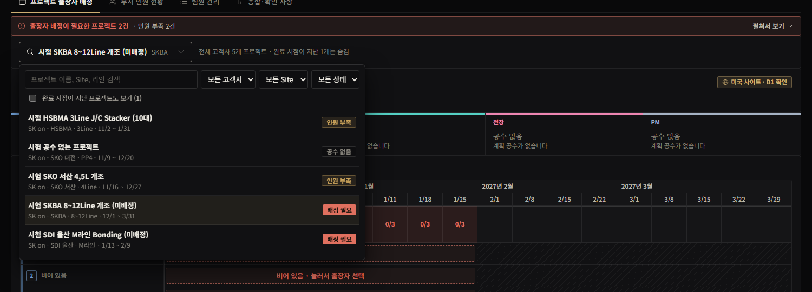
위쪽 검색칸에 프로젝트 이름·Site·라인·제조번호를 입력해 찾습니다.
고객사/Site/상태 선택으로 목록을 좁힐 수 있습니다. 상태는 배정 필요, 인원 부족, 배정 완료, 공수 없음 중에서 고릅니다.
[완료 시점이 지난 프로젝트도 보기]를 체크하면 이미 끝난 프로젝트도 목록에 나옵니다. 기본은 숨김입니다.
각 줄 오른쪽 배지가 그 프로젝트의 현재 상태입니다. Esc 키나 바깥을 누르면 목록이 닫힙니다.
4. 출장자 관리
4-4. 프로젝트 출장자 배정 화면 읽기
프로젝트를 고르면 부서별 계획 인원과 배정 현황이 한 표에 나옵니다.
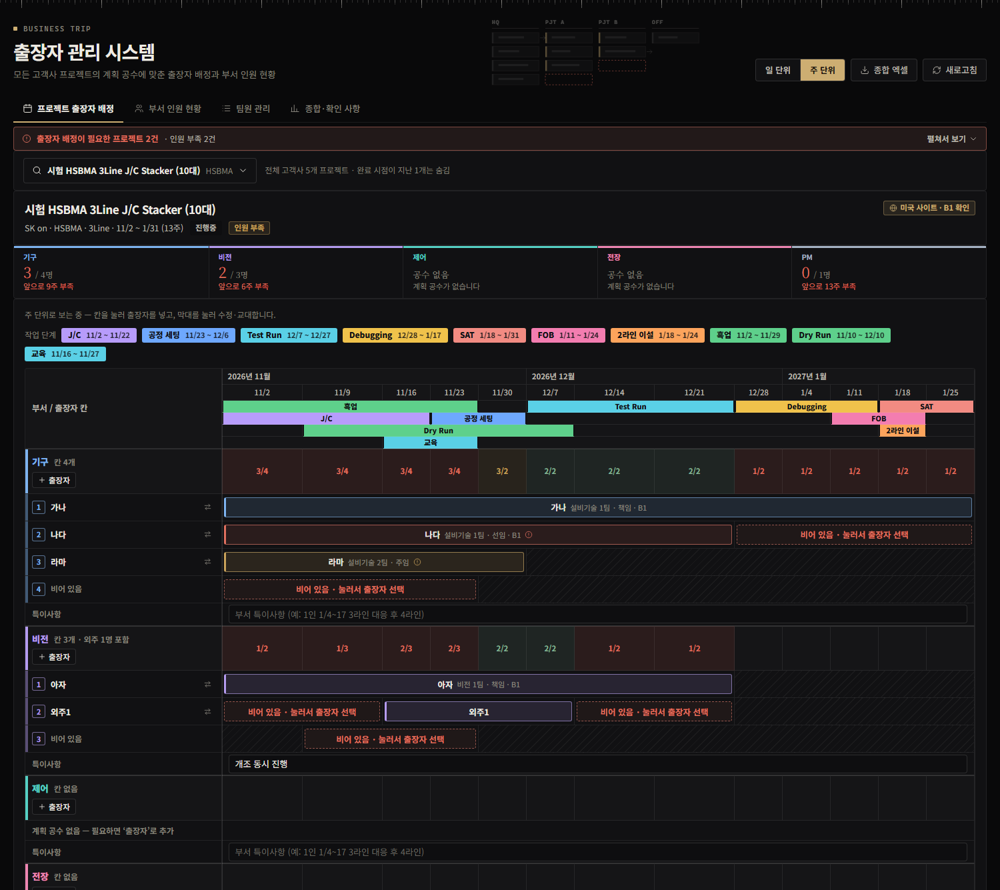
제목 줄: 프로젝트명, 고객사·Site·라인·기간, 상태 배지(진행중, 인원 부족, 배정 필요 등)가 나옵니다. HSBMA·SKBA·SKOT 같은 미국 사이트이면 "미국 사이트 · B1 확인" 표시가 붙습니다(4-16 참고).
부서 카드(기구·비전·제어·전장·PM): 큰 숫자가 지금 배정된 인원, 뒤가 필요한 인원입니다. 아래 "앞으로 N주 부족"이 아직 모자란 기간입니다. 계획 공수가 없는 부서는 "공수 없음"으로 표시됩니다.
작업 단계(마일스톤) 띠: 프로젝트 마일스톤이 단계마다 색으로 나오고 위쪽 범례에 날짜가 있습니다. 일정이 겹치는 단계도 줄을 나눠 모두 표시되므로 같은 시기에 어떤 작업이 병행되는지 확인할 수 있습니다.
부서 블록: 부서마다 필요한 최대 인원만큼 칸(줄)이 만들어집니다. 칸 왼쪽 숫자가 칸 번호, 그 옆이 배정된 사람 이름입니다. 부서 머리의 "3/4" 같은 숫자는 그 시기의 배정/필요 인원이고, 부족하면 붉게 표시됩니다.
계획 공수는 프로젝트의 마스터 스케줄(또는 2-11 직접 등록) 공수를 그대로 쓰며 이 화면에서 고치지 않습니다. 기구·비전·제어·전장·소장(PM)만 다루고 안전·SV는 제외합니다. 각 부서 외주 인원은 그 부서에 합산되며 부서 머리에 "외주 N명 포함"으로 보입니다.
표 아래 범례: 비어 있는 칸(눌러서 배정) / 배정된 출장자 / 경고(비자 등) / 충돌(기간 겹침·부재) / 공수 부족 / 공수 충족.
4. 출장자 관리
4-5. 일 단위로 넘겨 보기
[일 단위]를 누르면 하루 칸으로 바뀌고 요일과 토·일이 붉게 표시됩니다. 기본은 프로젝트 전체 기간입니다.
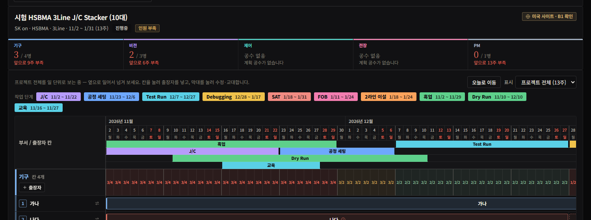
일 단위 화면에서는 칸을 아주 좁게 줄여 프로젝트 전체를 옆으로 밀어 가며 봅니다. 열 때 오늘 칸으로 자동 이동하고, [오늘로 이동] 버튼으로 언제든 돌아옵니다.
오른쪽의 표시 선택에서 "프로젝트 전체" 대신 2~12주 단위 창으로 볼 수도 있습니다.
[주 단위]에서는 한 칸이 한 주이며, 주별 숫자(필요·배정)는 그 주 안에서 하루 기준 가장 큰 값입니다. 교대로 이어진 두 사람은 같은 날 겹치지 않으므로 1명으로 셉니다.
일·주 단위 전환은 이 탭뿐 아니라 부서 인원 현황과 종합 탭 칸에도 똑같이 적용됩니다.
4. 출장자 관리
4-6. 출장자 배정하기
비어 있는 칸(붉은 점선 "비어 있음 · 눌러서 출장자 선택")을 누르면 배정 창이 열립니다.
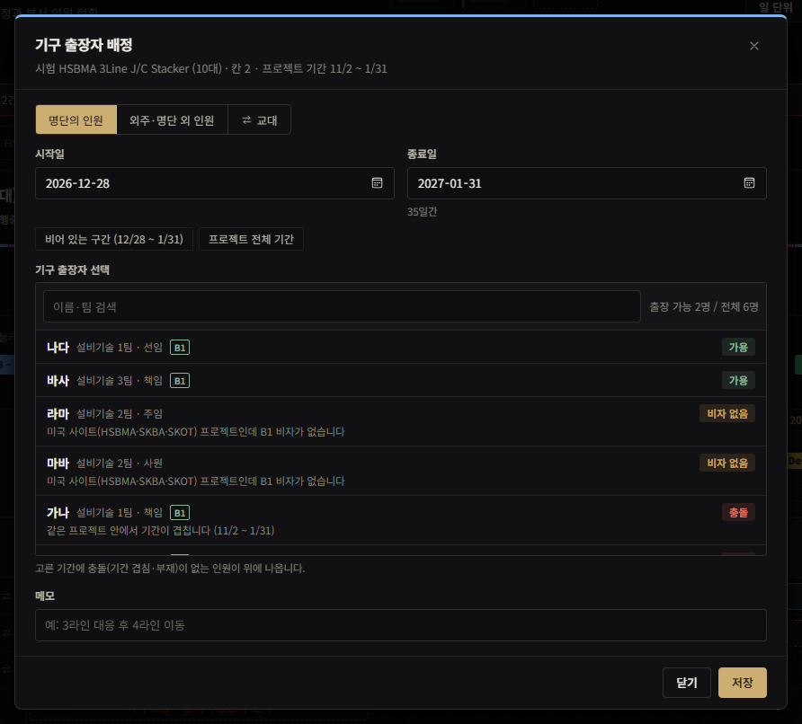
명단의 인원: 팀원 관리에 등록된 인원 중에서 고릅니다. 외주·명단 외 인원: 명단에 없는 외주·법인 인원은 이름을 직접 적습니다(공수에는 1명으로 계산). 세 번째 교대 탭은 4-7을 참고하세요.
시작일/종료일을 정합니다. 칸을 눌러 열면 빈 구간이 미리 들어가 있고, [비어 있는 구간], [프로젝트 전체 기간] 버튼으로 빠르게 채웁니다.
아래 후보 목록은 기간 중 충돌이 없는 사람이 위에 나옵니다. 각 사람 오른쪽 배지: 가용(문제 없음), 비자 없음(미국 사이트인데 B1 없음, 경고), 겹침 · 사유 필요(같은 사이트의 다른 프로젝트나 부재·외부 일정과 겹침, 사유를 적으면 배정 가능), 배정 불가(사이트가 다른 프로젝트나 같은 프로젝트와 겹침, 선택되지 않음). 이유가 한 줄로 함께 적힙니다. 이름·팀으로 검색할 수 있습니다.
"겹침 · 사유 필요"인 사람을 고르면 겹침 사유 입력칸이 나타나며, 사유를 적어야 저장됩니다(4-18). 비자 없음만 있는 경우는 저장할 때 "경고가 있는 배정입니다" 확인 창에서 [그래도 저장]을 누르면 됩니다. 필요하면 메모(예: 3라인 대응 후 4라인 이동)를 남기고 [저장]을 누릅니다.
PM 자리에는 PM 인원이 먼저 나오고, 기구 인원도 배정할 수 있습니다(배지로 부서 표시). 다른 부서 조합(예: 비전 인원을 PM 자리)은 막힙니다.
계획 공수가 없는 부서에 인원을 넣으려면 부서 머리의 [+ 출장자]를 누릅니다. 칸이 추가됩니다.
4. 출장자 관리
4-7. 수정·삭제·교대
배정된 막대를 누르면 수정 창이 열립니다. 기간을 바꾸거나 사람을 바꾸거나 삭제할 수 있습니다.
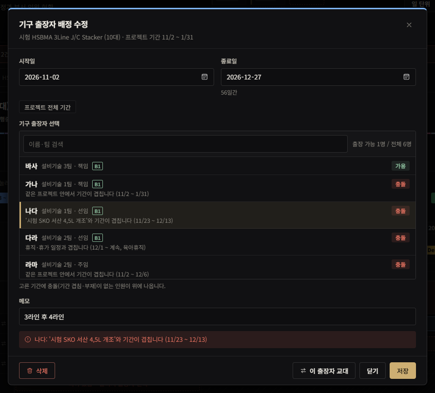
막대 옆 ⓘ 표시는 경고(비자 등) 또는 충돌이 있다는 뜻입니다. 창 아래쪽 붉은 줄에 이유가 나옵니다. 막대에 마우스를 올리면 기간·메모와 함께 "동일 사이트 예외 (사유: …)"처럼 겹침 사유도 보입니다.
[저장]으로 변경하고, [삭제]로 이 배정을 지웁니다. 지우면 그 칸은 다시 비어 있음이 됩니다.
[이 출장자 교대]는 중간에 사람이 바뀌는 경우입니다. 누르면 교대 화면으로 넘어갑니다(아래).
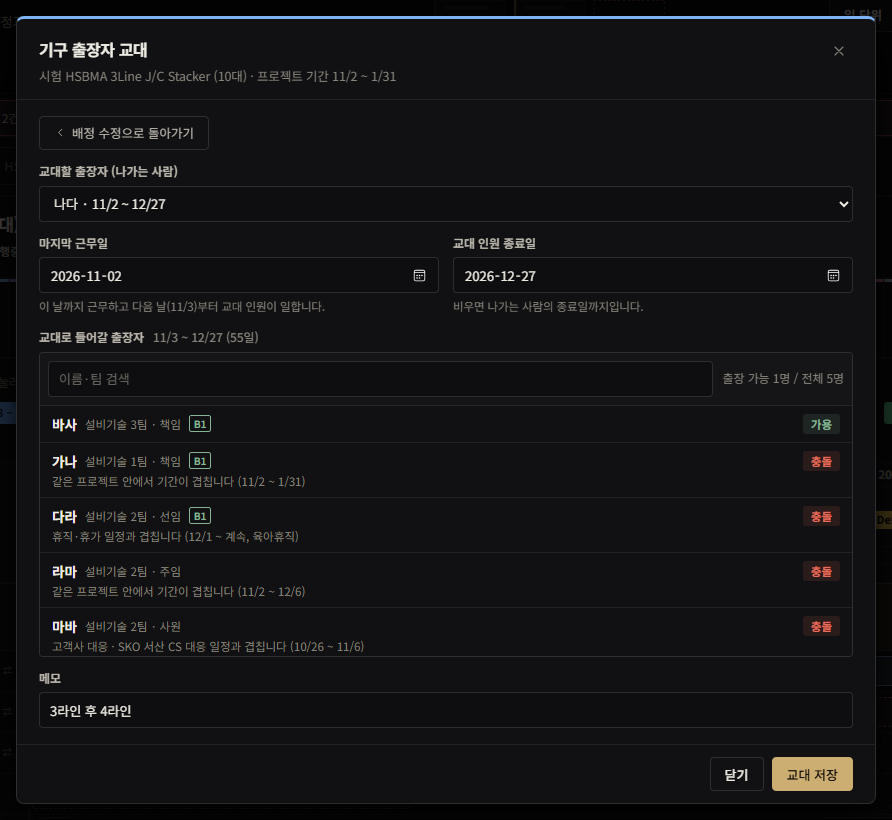
교대: 나가는 사람을 고르고 마지막 근무일을 정하면 다음 날부터 교대 인원이 일합니다. 교대 인원 종료일을 비우면 나가는 사람의 종료일까지입니다.
[교대 저장]을 누르면 새 사람을 먼저 넣고 나가는 사람의 종료일을 줄입니다. 중간에 실패하면 자동으로 원래 상태로 되돌립니다.
칸 번호 옆 ⇄ 버튼(교대)이나 부서 머리 [+ 출장자]에서도 같은 교대를 할 수 있습니다. 교대된 사람은 같은 칸 안에서 이어서 표시됩니다.
4. 출장자 관리
4-8. 부서 특이사항
각 부서 블록 맨 아래의 한 줄 입력칸에 그 부서의 참고 사항을 적어 둡니다.
예: "1인 1/4~17 3라인 대응 후 4라인", "개조 동시 진행". 최대 200자입니다.
입력 후 Enter를 누르거나 칸 밖을 누르면 저장됩니다. 저장에 실패하면 이전 내용으로 돌아갑니다.
수정 권한이 없으면 글만 보입니다.
내용은 프로젝트와 부서별로 따로 저장되며, 같은 프로젝트를 보는 모든 사람에게 보입니다.
4. 출장자 관리
4-9. 부서 인원 현황
고른 날(또는 고른 주)에 부서 인원이 어디에 있는지 보여 주는 화면입니다. 맨 위의 부서 카드와 아래 부서 상황판으로 구성됩니다.
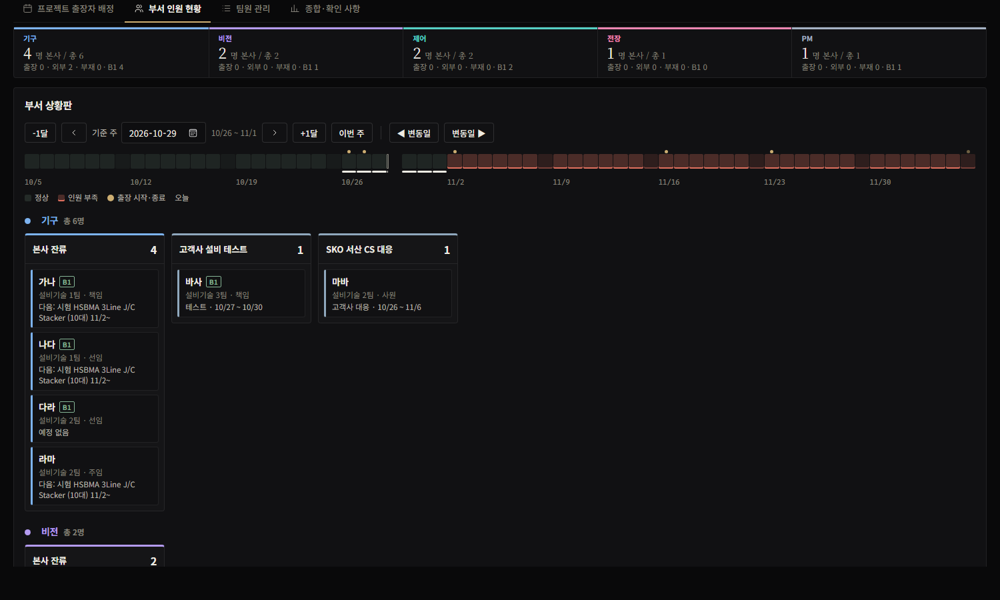
부서 카드: "N명 본사 / 총 M"과 "출장·외부·부재·B1" 수입니다. 카드를 누르면 그 부서만 보이고 다시 누르면 전체로 돌아옵니다.
본사 잔류 칸: 그날 프로젝트나 외부 일정이 없는 인원입니다. 카드에는 이름, B1 표시, 팀·직위, 다음 일정("다음: 프로젝트명 11/2~") 또는 "예정 없음"이 나옵니다. 카드를 누르면 인원 정보 창이 열립니다.
프로젝트별 칸: 그날 그 프로젝트에 가 있는 인원입니다. 칸 제목 오른쪽 숫자가 배정/필요이고, 부족하면 붉습니다. 인원이 없어도 그날 공수가 있는 프로젝트는 칸이 나와서 부족을 알 수 있습니다.
외부 칸: 프로젝트가 아닌 일정(고객사 대응·테스트 등)으로 나가 있는 인원이며 간 곳(장소)마다 칸이 나뉩니다. 부재 칸: 휴직·휴가·교육 인원입니다.
20명을 넘는 부서는 칸이 여러 열로 나뉘어 한 화면에 더 많이 보입니다.
4. 출장자 관리
4-10. 날짜 빨리 이동하기
부서 상황판 위의 날짜 줄은 하루씩 넘기는 불편을 줄이도록 단위 이동, 변동일 건너뛰기, 날짜 띠를 함께 제공합니다.
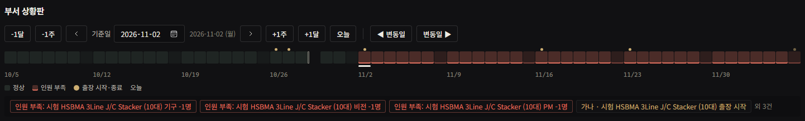
단위 이동: [-1달][-1주][<][날짜][>][+1주][+1달][오늘]. 날짜 칸을 눌러 달력에서 직접 고를 수도 있습니다. 주 단위 보기에서는 -1주/+1주가 빠지고 달 이동이 4주입니다.
변동일 버튼([◀ 변동일], [변동일 ▶]): 인원 부족이 처음 시작되거나 인원 수가 바뀌는 날, 출장 시작·종료·외부 일정 시작이 있는 날로 바로 건너뜁니다. 같은 부족이 이어지는 날은 한 번에 지나갑니다.
날짜 띠: 기준일을 따라다니는 9주 범위입니다. 칸 하나가 하루이며 붉은 칸 = 인원 부족일, 위의 점 = 출장 시작·종료, 테두리 = 오늘, 밑줄 = 선택한 날입니다. 칸을 누르면 그 날로 이동하고 칸에 마우스를 올리면 요약이 나옵니다. 띠 밖으로 나가면 범위가 따라 옮겨 갑니다.
띠 아래 한 줄 요약(일 단위)은 선택한 날의 부족 내용과 출장 시작·종료를 알려 줍니다.
부족은 오늘 이후 날짜만 셉니다. 보고 있는 부서 필터(위 부서 카드)를 따릅니다.
4. 출장자 관리
4-11. 인원×날짜 표
상황판 아래의 표는 사람별로 날짜마다 어디에 있는지를 한 줄씩 보여 줍니다.
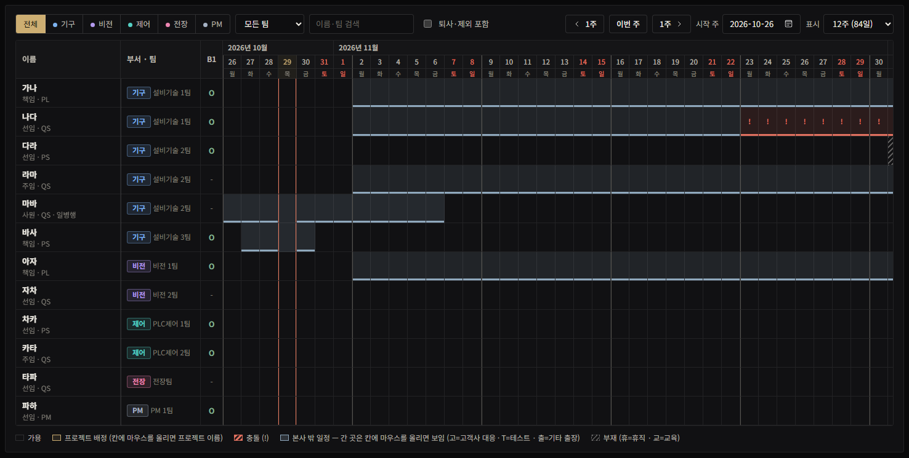
위쪽 도구줄: 부서 칩, 팀 선택, 이름·팀 검색, [퇴사·제외 포함] 체크로 인원을 거릅니다. 오른쪽 [1주 이전/이번 주/1주 이후], 시작 주, 표시(주 수)로 보는 기간을 옮깁니다.
색 의미: 아무 표시 없음 = 가용(본사). 프로젝트 색 칸 = 프로젝트 배정(칸에 마우스를 올리면 프로젝트 이름). 붉은 줄무늬 "!" = 충돌(기간 겹침). 청록 칸 = 본사 밖 일정(고=고객사 대응, T=테스트, 출=기타 출장, 마우스를 올리면 장소). 해칭 = 부재(휴=휴직·휴가, 교=교육).
청록·해칭 칸을 누르면 그 일정을 바로 수정·삭제하는 창이 열립니다.
B1 열의 O는 B1 비자 보유입니다. 오늘은 붉은 세로선으로 표시됩니다.
4. 출장자 관리
4-12. 미등록 프로젝트 대응 일정
프로젝트에 배정되지 않았지만 본사 밖에 나가 있는 인원(CS 대응, 고객사 대응, 테스트 등)은 일정으로 적어 둡니다. 그러면 그 기간 본사 가용 인원에서 빠지고, 어디에 가 있는지 보입니다.
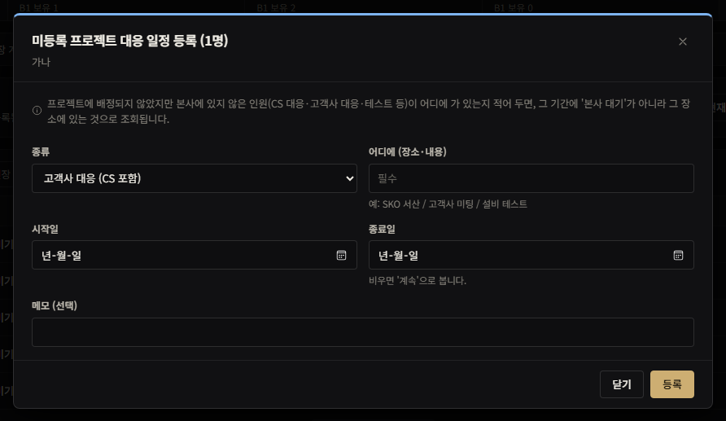
등록: 팀원 관리 표에서 한 명은 행의 달력 버튼, 여러 명은 체크한 뒤 [미등록 프로젝트 대응 일정]을 누릅니다.
종류: 고객사 대응(CS 포함) · 테스트 · 기타 출장은 외부 출장(장소 필수)이고, 교육 · 휴직·휴가 · 기타는 부재(내용 선택)입니다.
어디에에는 "SKO 서산", "고객사 미팅"처럼 장소·내용을 적습니다. 상황판에서 이 장소가 칸 이름이 됩니다. 종료일을 비우면 "계속"으로 봅니다.
출장자로 배정할 인원 명단을 관리하는 탭입니다. 모든 부서의 인원을 보고 수정할 수 있습니다.
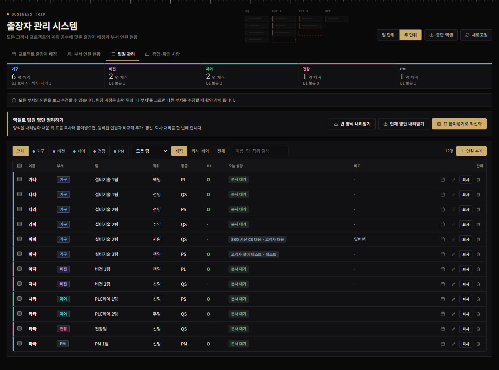
위쪽 부서 카드: 부서별 재직 인원, B1 보유 수, 퇴사·제외 수입니다.
필터: 부서 칩, 팀, 상태(재직/퇴사·제외/전체), 이름·팀·직위 검색. 오른쪽 [+ 인원 추가]로 한 명씩 등록합니다.
표의 "오늘 상황"은 오늘 기준 본사 대기, 프로젝트 배정, 외부 일정 중 어디인지입니다. 행 오른쪽 버튼: 달력 = 대응 일정 등록, 연필 = 수정, [퇴사], 휴지통 = 삭제.
퇴사와 삭제: 배정 기록이 있는 사람은 삭제가 막힙니다. 이런 사람은 [퇴사]로 처리하면 후보 목록에서만 빠지고 기록은 남습니다. 필요하면 [복귀 처리]로 되돌립니다.
행 맨 앞 체크박스로 여러 명을 고르면 아래 일괄 처리 막대가 나타납니다: 대응 일정 등록, 퇴사 처리, 복귀 처리, 삭제, 선택 해제.
인원 정보 창(이름 클릭)에서는 이름, 직위, 부서, 팀, 등급, 비고, B1 비자를 고치고 그 사람의 대응 일정 목록을 봅니다. 배정이 있는 인원은 부서를 바꿀 수 없습니다.
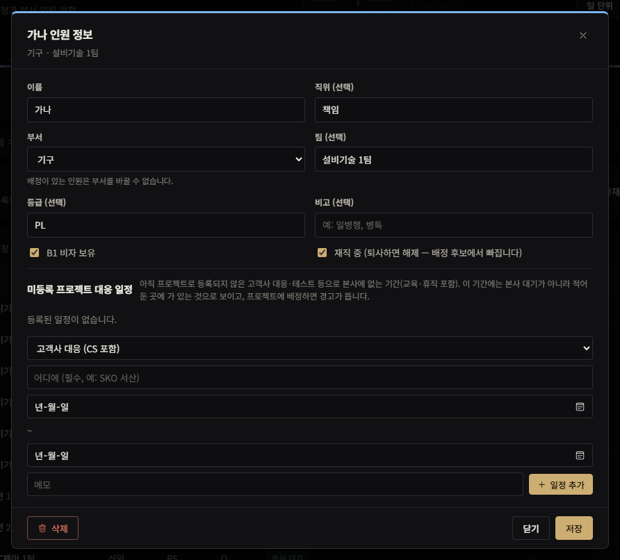
4. 출장자 관리
4-14. 엑셀로 팀원 명단 일괄 등록·최신화
표 붙여넣기로 팀원 명단을 한 번에 등록하거나 최신화합니다(1-8의 붙여넣기 방법과 같습니다).
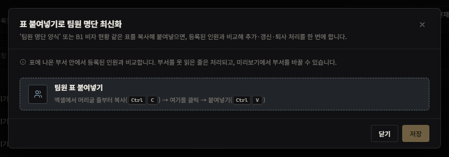
팀원 관리 탭 위의 [빈 양식 내려받기]로 양식을 받습니다. [현재 명단 내려받기]는 지금 명단을 부서별 시트로 나눠 같은 양식으로 내려받으므로, 고쳐서 다시 붙여넣기에 편합니다.
양식의 머리글은 첫 줄에 있고 열은 부서(분야) · 소속 팀 · 이름 · 직위 · 등급 · B1 비자 · 상태 · 비고입니다. 부서·B1·상태는 목록에서 고릅니다. 이름이 "(예시)"로 시작하는 줄은 붙여넣을 때 건너뜁니다.
[표 붙여넣기로 최신화]를 누르고 점선 칸에 Ctrl+V 하면 기존 명단과 비교한 미리보기가 나옵니다: 새로 추가, 정보 갱신, 팀 이동, 퇴사 후보.
표에 없는 재직 인원은 퇴사 후보로만 제시되며 기본은 체크가 해제되어 있습니다. 퇴사시킬 사람만 직접 체크합니다.
표에 열 자체가 없으면 기존 값을 그대로 두고, 열이 있는데 칸이 비어 있으면 값을 비웁니다. B1 비자 현황표 같은 표도 붙여넣을 수 있습니다.
내용을 확인한 뒤 [저장 (추가 N · 갱신 N …)] 버튼을 누르면 한 번에 저장됩니다.
4. 출장자 관리
4-15. 종합·확인 사항
배정이 모자라거나 문제가 있는 곳을 한 화면에서 확인합니다.
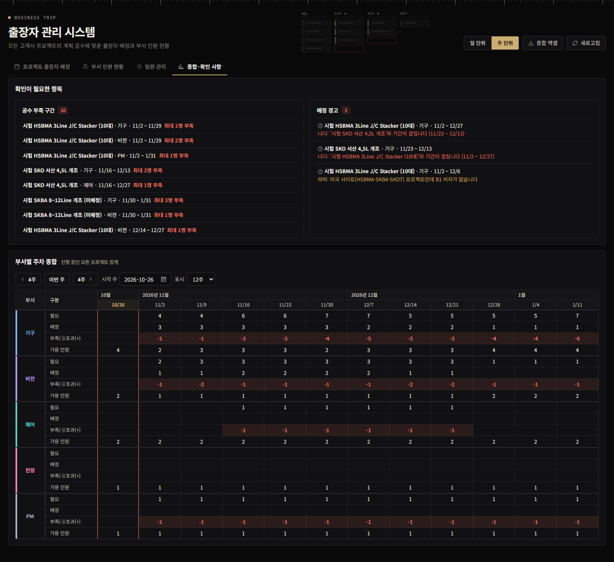
공수 부족 구간: 프로젝트·부서별로 "11/2~11/29 최대 1명 부족"처럼 부족한 기간과 최대 부족 인원이 나옵니다. 항목을 누르면 그 프로젝트의 배정 화면으로 이동합니다. 오늘 이후 부족만 표시됩니다.
배정 경고: 기간이 겹치는 배정(충돌)이나 B1 비자 미보유 같은 경고 목록이며, 항목을 누르면 해당 프로젝트로 이동합니다.
부서별 주차 종합: 진행 중인 모든 프로젝트를 합친 표입니다. 부서마다 필요(계획 공수), 배정, 부족(-)/초과(+), 가용 인원이 날짜(또는 주) 칸마다 나옵니다. 부족은 붉은 줄입니다.
위쪽 [4주 이전/이번 주/4주 이후], 시작 주, 표시 기간으로 보는 범위를 옮깁니다.
4. 출장자 관리
4-16. 경고와 판단 기준
시스템이 경고나 부족을 판단하는 기준입니다. 숫자가 이상하게 보일 때 확인하세요.
충돌: 같은 사람이 같은 기간에 (1) 같은 프로젝트에 겹쳐 배정, (2) 다른 프로젝트에 겹쳐 배정, (3) 휴직·휴가·교육 등 부재와 겹침, (4) 외부 출장(고객사 대응·테스트 등)과 겹치는 경우입니다. 이 중 (1)과 사이트가 다른 (2)는 저장할 수 없고, 같은 사이트의 (2)와 (3)·(4)는 사유를 적으면 저장할 수 있습니다(4-18). 사유가 적힌 겹침은 경고 목록에서 빨간색이 아니라 안내(i)로 바뀝니다.
B1 비자 경고: 프로젝트 Site가 HSBMA·SKBA·SKOT(미국 사이트)일 때만 확인합니다. 다른 해외 사이트는 해당하지 않습니다.
부족: 날짜마다 (그 프로젝트·부서의 계획 공수) − (그날 배정된 인원)입니다. 부족 인원은 오늘 이후 날짜만 셉니다. 주 단위에서는 그 주의 최대값을 씁니다.
가용 인원: 재직 중이면서 그 기간에 프로젝트·외부 일정·부재가 없는 인원입니다.
다른 부서 수정 확인: 팀장(Grade2.5) 계정은 화면 위쪽에서 "내 부서"를 고를 수 있습니다(없으면 계정의 소속 팀에서 추정). 내 부서가 아닌 부서의 배정·인원·특이사항·퇴사·삭제를 저장하려 하면 "내 부서가 아닙니다. 그래도 수정할까요?" 확인 창이 뜨고, 취소하면 저장되지 않습니다. 보는 것에는 제한이 없고 PM·관리자는 경고 없이 수정합니다.
프로젝트가 안 보일 때: 프로젝트 일정에 등록되어 있는지, 종료일이 오늘보다 앞서 숨겨진 것은 아닌지("완료 시점이 지난 프로젝트도 보기") 확인합니다. 부서 칸이 "공수 없음"이면 프로젝트 일정에서 공수를 등록하거나 직접 등록(2-11)합니다.
4. 출장자 관리
4-17. 종합 엑셀 내려받기
프로젝트별 출장자 표를 기존 "동시 여러 PJT 발생 시 대응 방안" 관리장표 양식의 엑셀로 내려받습니다. AI를 쓰지 않고 화면의 배정·인원·일정 데이터를 규칙대로 엑셀로 바꾸며, 브라우저 안에서만 만들어지므로 파일이 서버로 올라가지 않습니다. 관리자·Grade3·Grade2.5만 내려받을 수 있습니다(Grade2는 보기 전용이라 제외).
오른쪽 위 [종합 엑셀]을 누르고 시작 주와 기간, 옵션(프로젝트를 접은 상태로 시작, 지난 프로젝트 포함)을 정한 뒤 [엑셀 내려받기]를 누릅니다.
엑셀 안의 시트는 7개입니다. PJT 출장자(프로젝트별 배정표, 주 단위), 종합 현황(부서별 계획 공수 대비 배정·과부족·미배정 칸·본사 가용·외부 일정), 인원별 위치 현황(누가 어느 주에 어디에 있는지), 프로젝트 목차(프로젝트 목록과 이동 링크), 인원 명단, 외부 일정, 작성 안내입니다.
PJT 출장자 시트는 프로젝트마다 머리글 줄 아래에 마일스톤(작업 단계) 띠, 부서별 칸(이름), 부서별 TOTAL, 부서별 특이사항이 이어지고, 맨 아래에 "PJT 별 취합 공수"가 있습니다. 일정이 겹치는 마일스톤은 줄을 나눠 모두 보입니다.
표시 색: 이름이 들어간 칸은 연한 파랑, 아직 정해지지 않은 자리(분홍 "1")는 연한 분홍, 미국 사이트에서 B1 확인이 안 된 이름은 연한 주황, 같은 주에 두 곳에 배정된 이름은 연한 빨강입니다. 머리글과 마일스톤은 파스텔 톤이며, 글씨는 검정이고 굵게 쓰지 않습니다.
접고 펼치기: 각 프로젝트 블록 아래의 빈 줄(높이를 키워 두었습니다) 왼쪽 +/− 버튼으로 그 프로젝트만 접고 펼치고, 왼쪽 위 숫자 1·2 버튼으로 전체를 한 번에 접고 펼칩니다.
수식으로 연결되어 있어, 파일에서 이름 칸을 목록에서 고르거나 바꾸면 TOTAL·취합 공수·종합 현황·인원별 위치 현황이 다시 계산됩니다. 프로젝트 블록을 통째로 복사해 "PJT 별 취합 공수" 위에 붙여도 자동으로 합산됩니다. 왼쪽 가장자리의 작은 글자 H·M·S·T는 합산에 쓰이는 표시이므로 지우지 마세요.
프로젝트 이름은 줄바꿈 없이 한 줄로 보이고, 칸보다 길면 글씨 크기가 줄어듭니다.
파일에서 고친 내용은 시스템으로 되돌아오지 않는 내려받기 전용입니다. 시스템의 정본은 항상 화면이므로, 다시 필요하면 최신 상태로 새로 내려받으세요.
4. 출장자 관리
4-18. 겹치는 일정과 동일 사이트 일시 예외
한 사람이 같은 기간에 두 곳에 배정되는 일을 막기 위한 규칙입니다. 배정 창(4-6)과 교대 창(4-7)에 똑같이 적용되고, 화면을 거치지 않는 저장도 서버(DB)가 같은 규칙으로 막습니다.
겹치는 상대
처리
같은 프로젝트의 다른 배정
저장할 수 없음(예외 없음). 후보 목록에서 "배정 불가"로 표시되어 선택되지 않습니다.
사이트가 다른 프로젝트
저장할 수 없음. 기간을 나누거나 다른 사람을 고르세요.
같은 사이트의 다른 프로젝트
사유를 적으면 저장 가능(동일 사이트 일시 예외).
휴직·휴가·교육 등 부재, 외부 출장(고객사 대응·테스트 등)
사유를 적으면 저장 가능. 사유가 없으면 저장되지 않습니다.
후보 목록에서 "겹침 · 사유 필요"인 사람을 고르면 창 아래에 겹침 사유 (동일 사이트 일시 예외) · 필수 입력칸이 나타납니다. 이유(예: 같은 사이트 두 라인을 오가며 지원)를 2자 이상 적어야 [저장]이 됩니다. 사유는 최대 120자입니다.
저장하면 사유가 그 배정에 함께 기록됩니다. 막대에 마우스를 올리면 다시 볼 수 있고, 4-19의 작업 기록에도 "겹침 예외: 사유"로 남습니다.
사유가 적힌 겹침은 상대 배정 쪽에서도 예외로 인정됩니다. 두 배정 중 한쪽에만 사유를 적어도 양쪽의 경고가 안내(i)로 바뀝니다.
이미 겹친 채로 저장돼 있던 예전 배정은 지워지지 않고, 사유 없는 충돌로 계속 표시되어 정리하도록 알려 줍니다. 사람과 기간을 바꾸지 않는 수정(메모 등)이나 기간을 줄이는 수정은 막히지 않습니다.
겹침이 없어지도록 기간을 바꾸면 저장된 사유도 함께 비워집니다.
서버에서 거절될 때는 "다른 프로젝트(사이트가 다르거나 같은 프로젝트)와 일정이 겹쳐 배정할 수 없습니다" 또는 "일정이 겹치는 배정은 사유를 적어야 저장할 수 있습니다" 문구가 나옵니다.
4. 출장자 관리
4-19. 작업 기록
누가 언제 무엇을 바꿨는지를 출장자 관리 화면 오른쪽 위에서 확인합니다. 기록은 배정·인원·외부 일정·부서 특이사항의 추가·수정·삭제마다 서버가 자동으로 남기므로 별도로 입력할 것이 없습니다.
마지막 작업 카드: 일 단위/주 단위, 종합 엑셀, 새로고침 버튼 바로 아래에 같은 폭으로 있으며 가장 최근 작업의 사용자, 경과 시간, 내용(예: 인원 수정 · 홍길동)이 한 줄로 보입니다. 아직 기록이 없으면 "아직 기록된 작업이 없습니다"가 나옵니다.
카드를 누르면 타임라인이 아래로 펼쳐집니다. 날짜(오늘·어제·날짜)별로 묶여 있고 한 줄에 시각 · 종류(배정/인원/외부 일정/특이사항 + 추가/수정/삭제) · 사용자 · 내용과 프로젝트·부서가 나옵니다. 줄 왼쪽 색 막대는 추가(초록)·수정(파랑)·삭제(빨강)입니다.
처음에는 최근 5건이 보이고, 아래로 스크롤하면 더 오래된 기록을 볼 수 있습니다. 위쪽 선택 상자로 종류별로 걸러 볼 수 있습니다.
기록은 최근 100건만 보관됩니다. 새 기록이 쌓이면 가장 오래된 것부터 자동으로 지워지므로, 오래 보관해야 하는 내용은 따로 남겨 두세요.
한 줄에 다 안 들어가는 내용은 …로 줄여 보이며, 줄에 마우스를 올리면 전체 내용이 보입니다. 카드 밖을 누르거나 Esc 키를 누르면 닫힙니다.
기록은 조회 권한이 있는 사용자(관리자·Grade3·Grade2.5·Grade2)에게 보이고, 누구도 고치거나 지울 수 없습니다. 프로젝트를 삭제하면 그 프로젝트의 배정 삭제가 각각 기록됩니다.
CHAPTER 5
이슈 통합 관리
스태킹(Stacking)·노칭(Notching) 공정에서 발생한 이슈를 Site와 프로젝트별로 기록하고, 조치 현황과 재발 방지 지식을 관리합니다.
5. 이슈 통합 관리
5-1. 전체 통합 보기
모든 이슈를 카드로 보고, 위쪽에서 현황 요약을 확인합니다.
위쪽 요약: 전체 등록 이슈 수, 공정별 건수와 조치 완료율, 사이트/프로젝트 분류 현황.
카드에는 중요도(긴급·높음·보통), 처리 상태(접수/발생·조치 진행중·조치완료), Site, 발생일, 담당자가 표시됩니다.
카드의 [조치결과 기재]로 조치 내용을 입력하고, [상세]로 전체 내용을 열고, [수정]·[삭제]로 편집합니다.